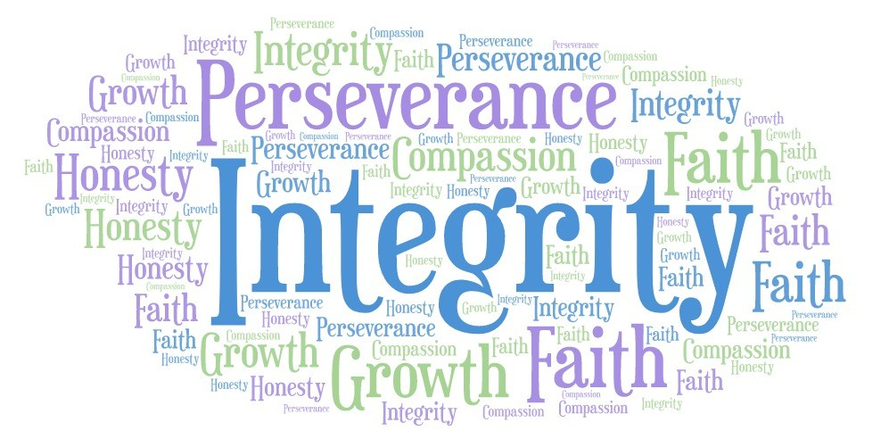

Integrity
1. Integrity doesn't just mean doing the right thing when no one is watching. It means being honest and transparent in all interactions, even when it's difficult.
2. I Have always been a very honest person, and it is from my family that values honesty and trust over everything else. I have always been taught to be honest and transparent, even when it's difficult.
3. Integrity is important because it builds trust and credibility with others. People know that they can rely and trust you to be truthful and consistent in your actions and words.
4. I believe that integrity is the foundation of trust, and without it, relationships—both personal and professional cannot be built.
Respect
1. Respect is something that everyone has the right to expect and receive. On the other hand it is always earned not something your entitled to. It is treating others the way you want to be treated and also with kindness and consideration.
2. My family has always taught me the importance of treating others with respect and dignity. No one wants to be treated terribly so why would you treat them that way if you wouldn't want to either.
3. Respect is important because it fosters a positive and inclusive environment where everyone feels valued and appreciated. You would not want someone to treat you with disrespect so why would you?
4. I believe that respect is something that everyone deserves and that it is essential for building strong, meaningful relationships. Without it, building relationships with others, personal and professional, becomes significantly more challenging.
Responsibility
1. Responsibility is the ability to take ownership of your actions and their consequences. It means being accountable for what you do and making sure you follow through on your commitments.
2. My family has taught the importance of taking accountability for your actions and their consequences, your commitments and your decisions.
3. Your responsibility extends beyond just your own actions and commitments, but also the impact they have on others and the community or maybe even your career and your relationships.
4. I believe when you dont take responsibility for your actions, you lose the trust and respect of others, and it can have negative consequences on your personal and professional life.
Empathy
1. Empathy is the ability to understand and share the feelings of another person. It involves putting yourself in someone else's shoes and recognizing their emotions and perspectives.
2. I have always been an overly empathetic person, which has helped me build strong connections with others and be able to understand things from both perspectives.
3. Empathy is important because it allows us to connect with others on a deeper level, fostering understanding and compassion. When we can see things from another person's point of view, we are better able to respond to their needs and emotions. It is also good for your careers, when you are trying to understand a client, co-workers, or higher-ups in their decisions.
4. I believe without empathy, we cannot truly understand or connect with others, leading to misunderstandings and a lack of meaningful relationships. Empathy is essential for building strong, positive connections with those around us.